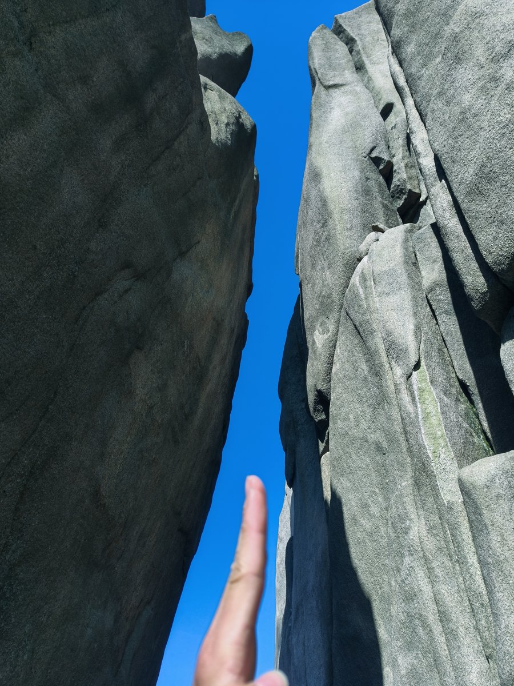
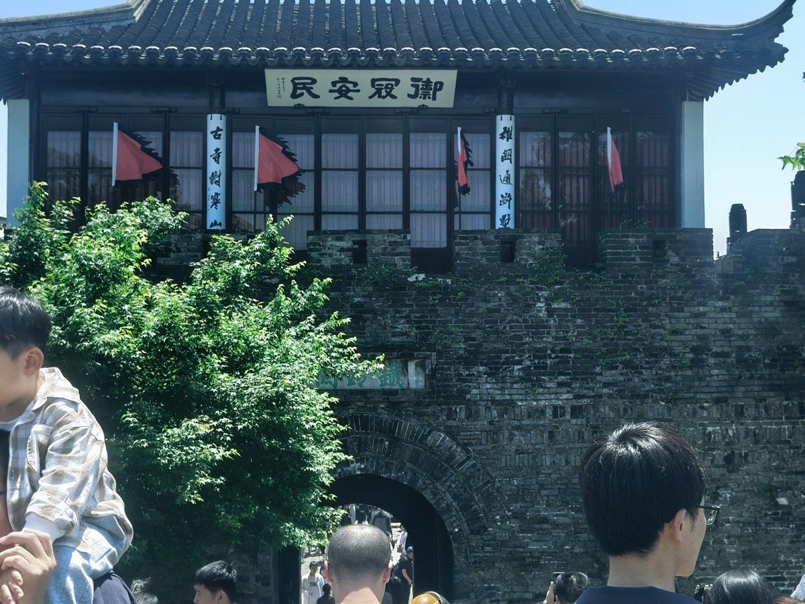
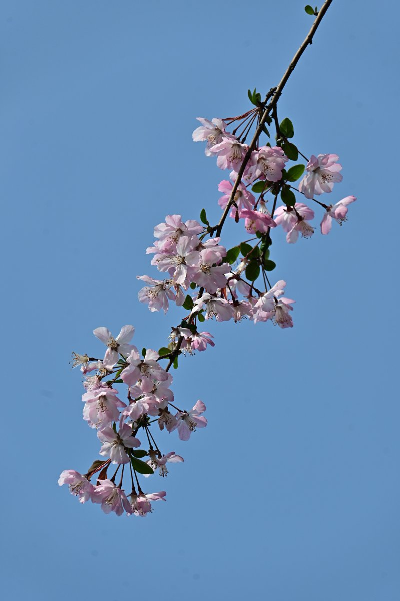
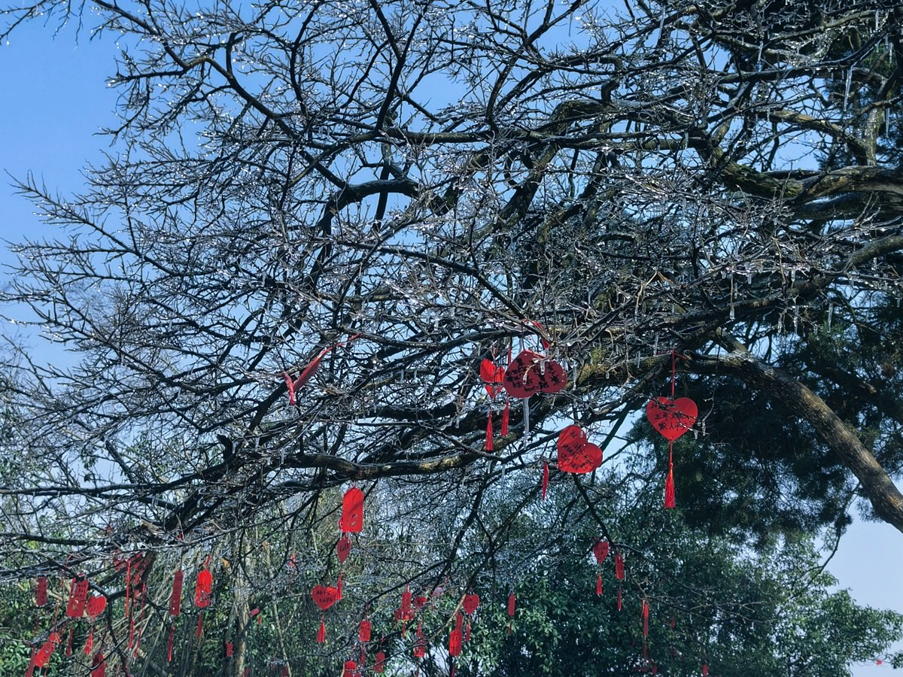
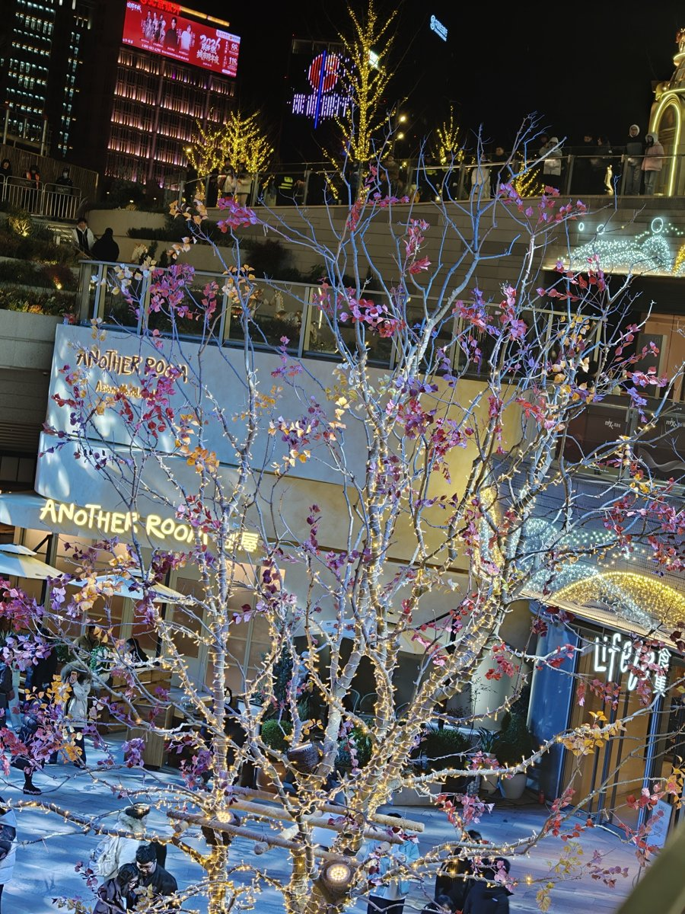
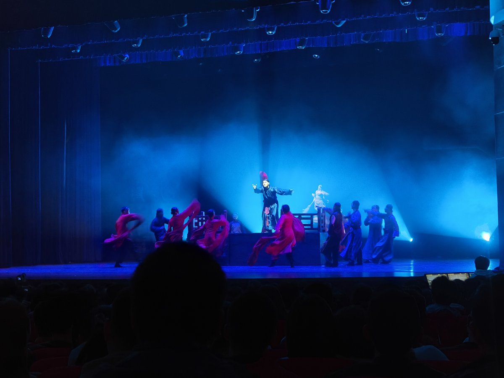
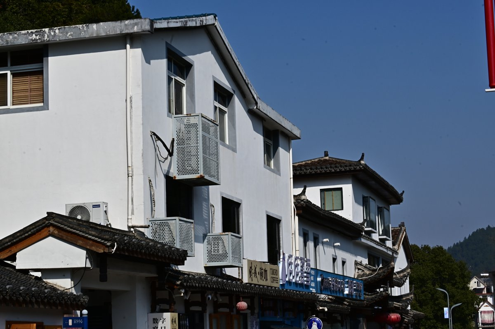
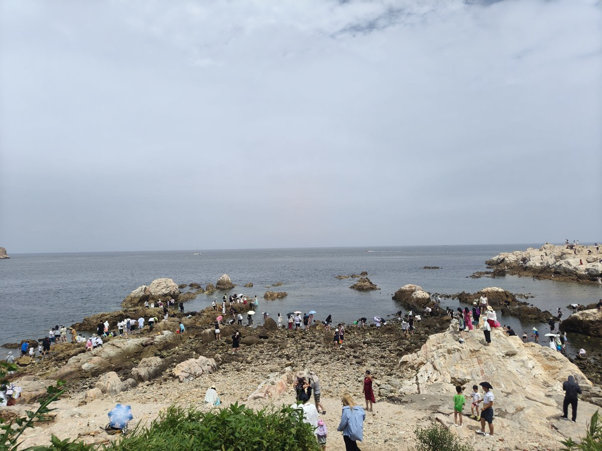

低维金属纳米材料可控合成
结构决定性能，合成决定结构。通过界面外延生长与表界面限域合成，在原子尺度上“雕刻”低维贵金属基材料，为活性位点的精准构筑提供新平台。
博士研究生
化学与材料科学学院 · 中国科学技术大学
科研如登山——目标清晰，路径自由。
Research
化学反应的极限，往往不是热力学，而是动力学——催化剂，正是打破这一极限的钥匙。研究以低维贵金属基纳米材料为核心， 追问一个根本性的科学问题：能否在原子尺度上精确设计催化活性位点，让能源小分子被高效活化，并沿着我们设定的路径精准转化？
我始终相信，催化性能并非偶然，而是由原子尺度的结构决定的。围绕这一信念，致力于建立从材料设计、结构表征到性能验证的完整研究路径： 以界面外延生长为手段，在异质界面上构筑晶格匹配的纳米结构；以表界面限域合成开辟新范式，将金属-非金属键合引入贵金属体系， 发展二维金属间化合物等新型低维材料平台；并结合原位与多尺度表征，在真实反应条件下追踪结构与电子态的演化，让机理与性能相互印证。
研究的意义，在于让分子尺度的洞察转化为真实世界的变革——更高效的能量转化、更清洁的化学过程、更可持续的未来。 我的目标，是让每一颗经过设计的活性位点，都能在真实器件中兑现其潜力。
结构决定性能，合成决定结构。通过界面外延生长与表界面限域合成，在原子尺度上“雕刻”低维贵金属基材料，为活性位点的精准构筑提供新平台。
看见，才能理解。综合 TEM/HRTEM、HAADF-STEM、XRD、XPS、XAFS 与同步辐射原位技术，在真实反应条件下追踪结构与电子态的演化，为催化机理提供原子级证据。
从活性位点到反应机理。聚焦氢气、氧气、二氧化碳等能源小分子的活化与选择性转化，打通材料设计到性能验证的完整链条，让原子尺度的设计兑现为宏观性能。
Education
博士研究生 · 无机化学
中国科学技术大学（导师：吴长征）
硕士研究生 · 无机化学
中国科学技术大学（导师：吴长征）
本科 · 材料化学
中国科学技术大学
Publications
Atomic-Layered Platinum-Based Intermetallic with Phosphorus Pillar Nanoengineering Enables pH-universal Hydrogen Oxidation Catalysis
DOI: 10.1002/anie.202515811Highly Crystalline Iridium-Nickel Nanocages with Sub-Nanopores for Acidic Bifunctional Water Splitting Electrolysis
DOI: 10.1021/jacs.4c01379Construction of Porous PtCo Alloy Nanotubes via an Epitaxial Growth Method for Efficient and Stable Electrochemical Oxygen Reduction Reaction
DOI: 10.1021/acs.nanolett.6c01157介孔碳负载的层状铂基金属间化合物及其制备方法与用途
公开号：CN202510403544.0一种镍基贵金属多壳层纳米笼材料及其制备方法与应用
公开号：CN202511799487.9一种氢燃料电池与锂电池混合动力无人机
公开号：CN122276198AExperience
中国科学技术大学青年创新基金 · 项目成员 · 2027.1 – 2028.12
【项目职责与成果：负责催化剂合成、电化学测试与数据分析】
《高等无机化学》课程助教 · 2026
【工作内容：组织习题课、批改作业与答疑等，按实际情况补充】
Honors
Album








Contact
欢迎交流与合作
ty12345@mail.ustc.edu.cn备用：3313952565@qq.com
查看论文与科研动态
researchgate.net/profile/Yi-Tan-87学术身份标识
orcid.org/0009-0000-6530-3270